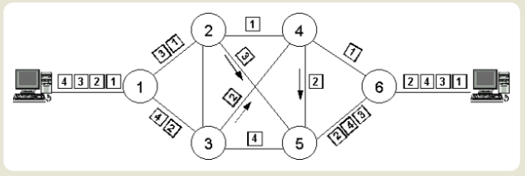

🔌 DEFINIZIONE
La commutazione è la tecnica utilizzata per trasmettere un messaggio tra mittente e destinatario in una rete. Definisce il modo in cui i dati vengono instradati e trasferiti.
🔄 TIPOLOGIE DI COMMUTAZIONE
- Commutazione di circuito: viene stabilito un circuito fisico dedicato tra mittente e destinatario per tutta la durata della comunicazione.
- Commutazione di pacchetto: i dati vengono suddivisi in pacchetti che possono seguire percorsi differenti nella rete per arrivare a destinazione. 

📡 MEZZI DI TRASMISSIONE
La trasmissione dei dati avviene attraverso vari tipi di linee fisiche, che si distinguono in:
| Tipologia | Definizione | Esempi |
|---|---|---|
| Linee Metalliche | Utilizzano conduttori fisici in rame, come i cavi coassiali e i doppini intrecciati. |
|
| Linee Non Metalliche | Usano la fibra ottica per trasmettere segnali luminosi riflessi all'interno di un filo di vetro. |
|
🧭 TOPOLOGIA LOGICA
La topologia logica definisce il modo in cui i dispositivi comunicano all'interno di una rete, ovvero il percorso logico che i dati seguono.
📢 Reti Broadcast
Ogni dispositivo trasmette i dati a tutti gli altri sulla rete. Tipicamente implementate con topologia a bus.
🎟️ Reti Token Passing
Un "gettone" (token) viene passato tra i dispositivi; solo chi possiede il token può trasmettere. Usato in reti ad anello.